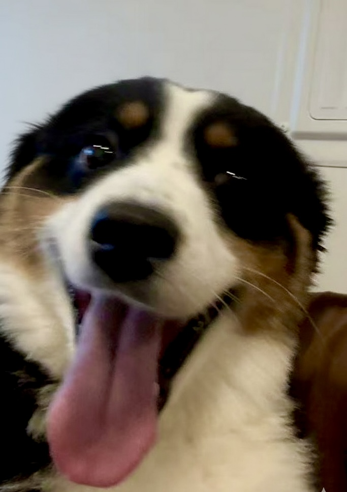

Kehan Guo
LLM Post-Training, Agents, and Verifiable Evaluation

hover to meet Oreo
I am a Ph.D. candidate in Computer Science at the University of Notre Dame, advised by Prof. Xiangliang Zhang. I am currently a research intern at Apple, working on post-training for large language models, following research internships at Amazon AWS AI and ByteDance.
I build reliable LLM agents and design the feedback that trains and evaluates them. My research asks what models actually learn when optimized against imperfect proxies: do they acquire the intended capability, exploit the evaluator, or overfit the environment? I work on reward and verifier design for post-training, tool-using agents grounded in external evidence, and evaluations that expose failures under real constraints. Scientific reasoning, especially chemistry, is a central testbed because the evidence is concrete and the outcomes are checkable.
More broadly, I study interfaces for steering generative models, including how noise-data coupling in flow matching can encode property control without an inference-time reward model.
Featured Work
Three projects along one arc: steering models → constraining agents → measuring real capability.
Selected Publications
A selection; * denotes equal contribution. Full list on Google Scholar.
News
- 2026.06Started as a research intern at Apple, working on post-training for large language models.
- 2026.05At KDD 2026: co-organizing the Workshop on Reliable Scientific Foundation Models (RelSciFM) and presenting a tutorial on modern generative models for molecular discovery.
- 2025.12New preprint: Evaluating Large Language Models in Scientific Discovery, where I led chemistry question collection and evaluation.
- 2025.09Two papers at NeurIPS 2025: AdaReasoner (Spotlight) and ChemOrch.
- 2024.09MolPuzzle accepted at NeurIPS 2024 D&B (Spotlight).
More news
- 2026.04Two papers accepted at ICML 2026: ProbeLLM and Capability-Oriented Training Induced Alignment Risk.
- 2026.04Research Scientist Intern at ByteDance (San Jose), Apr–Jun 2026.
- 2026.04PolicyLLM accepted at ACL 2026 (Findings).
- 2026.03Passed Ph.D. candidacy exam.
- 2026.01TrustGen accepted at ICLR 2026.
- 2025.08Completed Applied Scientist internship, Amazon AWS AI, NYC.
Experience
-
Apple, Research InternPost-training for large language models.
-
ByteDance, Research Scientist InternTool-using LLM agents and feedback-driven skill evolution for complex information-seeking tasks.
-
Amazon AWS AI, Applied Scientist InternReward shaping and reinforcement-learning post-training for long-horizon reasoning.
-
University of Notre Dame, Graduate Research AssistantReward and verifier design, evidence-grounded agents, and verifiable scientific reasoning in chemistry.
Education
- Ph.D. in Computer Science, University of Notre Dame, 2022–2027 (expected). Advisor: Prof. Xiangliang Zhang.
- M.S., Boston University, 2020–2022.
Awards
- NeurIPS 2025 Spotlight, AdaReasoner
- NeurIPS 2024 Spotlight, MolPuzzle
- OpenAI Researcher Access Program (2024)
Service
Reviewer: NeurIPS (2024–25), ICLR (2025–26), ICML, AAAI, IJCAI, KDD, WWW, ACL Rolling Review (ACL/EMNLP).
Beyond Research
Most days outside the lab I'm with Oreo, my dog. He's the one in the photo if you hovered.